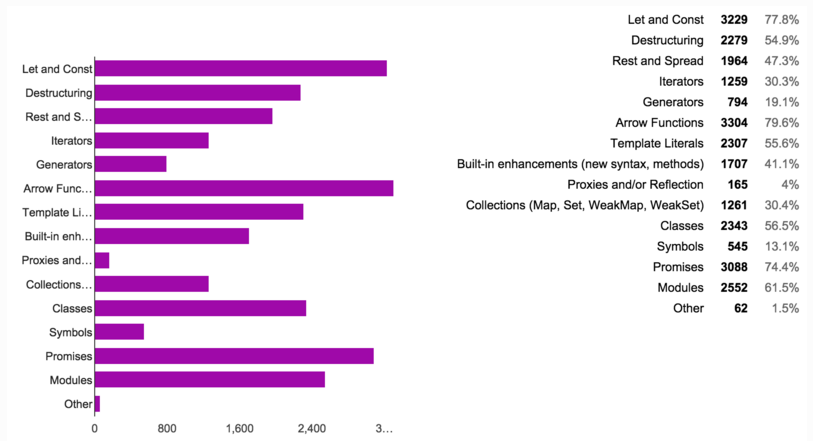
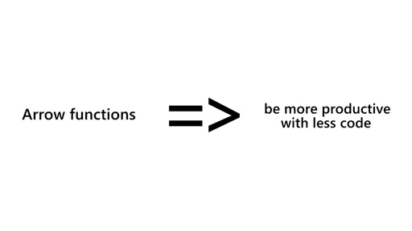

ES6 Arrow Functions | What Not To Do
ES6 arrow functions (aka fat arrow notation) is a powerful new way of writing functions in JavaScript. But in order to fully harness that power, it’s important to understand how these fat arrow functions behave differently than the regular ES5 function declarations most JavaScript developers are already familiar with. In this blog post, we’ll cover some of the mistakes to avoid when using this new function syntax, what happens to the ‘this’ and ‘arguments’ keyword inside fat arrow functions, as well as specific cases when not to use ES6 notation.
Everyone loves arrow functions. They’re clean, concise, and most importantly of all, they finally simplify some of the quirkiness surrounding the ‘this’ context in JavaScript. Developers no longer need to worry about binding the correct ‘this’ context to multiple nested functions or use the ‘that = this’ workaround, which resulted in slower and harder to reason about code. It’s no wonder fat arrow functions are the most popular ES6 feature.
However, despite the awesomeness of arrow functions, there are some things you should know before you begin swapping out your boring, old ES5 functions for their new and improved ES6 counterparts. So when might one want to use this new JavaScript function syntax? One of the main places you’re going to see fat arrow functions being used is as callbacks:
//ES5 array.map(function(item) { return item * 2; } //ES6 array.map(item => item * 2);
Thanks to the implicit return (which allows us to omit the curly brackets and the return statement when the function body fits on one line), and the fact that we can leave out the parentheses around arguments when there is only one of them, what we previously had to write in three lines of code can now be written in one. Yay!
Define your functions before you invoke them
But what about when you don’t want to write an anonymous function? With ES5, you can choose between a function declaration and a function expression, but with ES6, you have no choice but to declare your functions as expressions.
//ES5 function declaration function multiplyBy2(arg) { return arg * 2; } //ES5 function expression const multiplyBy2 = function(arg) { return arg * 2; } //ES6 arrow function const multiplyBy2 = arg => arg * 2
So what does this mean? Well, if you’re used to writing ES5 function declarations (like in the 1st example above), you’ve probably gotten used to the entire function definition being hoisted and thus being able to invoke those functions before you actually write them in your code. This isn’t the case with arrow functions: if you’re going to use arrow functions by assigning them to a variable (like in the 3rd example above), you need to remember to define them before they’re invoked.
The fact that arrow function definitions aren’t hoisted is the first thing you’re going to have to get used to if you start using arrow functions more in your code. But there are other pitfalls to look out for.
class Test { constructor() { this.name = 'Test constructor'; } method() { const func1 = () => { console.log(this); //points to instance of Test class } func1(); function func2() { console.log(this); //undefined } func2(); } } const test = new Test(); test.method()
The code above illustrates another very common case where you will want to use arrow functions: when you have a nested function that needs to access the ‘this’ context of the containing method sitting on an object. Previously, you would have had to use bind() or the ‘that’ = ‘this’ workaround to bind the ‘this’ context to the nested function, but now you can just let arrow functions do that work for you.
Most developers know about this feature of ES6 arrow functions but something less people are aware of is that arrow functions do not bind their own ‘arguments’ either. The following code will throw a reference error saying that ‘arguments’ is not defined:
const func = () => { console.log(arguments); //reference error: 'arguments' not defined }
With ES6 rest parameters now the standard way of getting an indefinite amount of arguments into an array that you can manipulate inside of the function scope, there’s arguably less need for the arguments object. However, there are still cases where you might need to use the arguments object for the additional functionality it offers that’s not provided by rest parameters. If that’s the case, you’ll want to make sure not to use arrow functions.
Wrap parentheses around an object when using an implicit return
Another potential point of confusion surrounding arrow functions is the need to wrap parentheses around an object when using an implicit return because it results in somewhat foreign-looking code:
const func = () => ({ key: 'value'});
This is a common pattern in Redux where you’ll be writing a lot of functions that simply return object literals. But if this is your first time seeing this, you’re probably wondering what those parentheses are doing around the curly brackets.
To understand why the parentheses are needed, it helps to understand why omitting them wouldn’t work as expected:
//Wrong const func = () => { key: 'value' }; //returns 'undefined' //Correct const func = () => ({ key: 'value'}); //returns { key: 'value' }
In the first example, the JavaScript interpreter is interpreting the curly brackets as the beginning of a new function block, and not a new object literal. And since no return statement is provided, it returns ‘undefined’.
In the second example, by wrapping the object literal in parentheses, it forces the interpreter to evaluate what’s inside as an expression and because of the implicit return, the object literal inside of the parentheses is returned.
Arrow functions cannot be used as methods or constructors
Two other situations where using arrow functions just straight up won’t work is when you’re writing a constructor function or a method (unless you’re using Babel’s class properties transform plugin, but that’ll be the subject of a future blog post). For that, ES6 introduced ‘classes’, special functions that — much like arrow functions — provide a cleaner and more concise syntax for implementing JavaScript’s object-oriented inheritance model.
Because arrow functions are the newer way to write functions in ES6, you might be tempted (as I was) to swap out all your ES5 functions for the newer syntax. But before you do, it’s important to understand the differences between the two and what arrow functions are best suited for and when they might not be appropriate.
So to recap:
- arrow functions must be defined above where they’re being invoked
- you cannot access the arguments object inside of an arrow function
- if you’re using an implicit return to return an object out of an arrow function, wrap that object in parentheses
- don’t use arrow functions for methods or constructors
With everything they bring to the table, there’s no reason not to be using arrow functions. They help make your code cleaner and easier to reason about and if you follow the basic guidelines listed above, you’ll avoid some of the pitfalls I fell into when first trying to adopt them.
